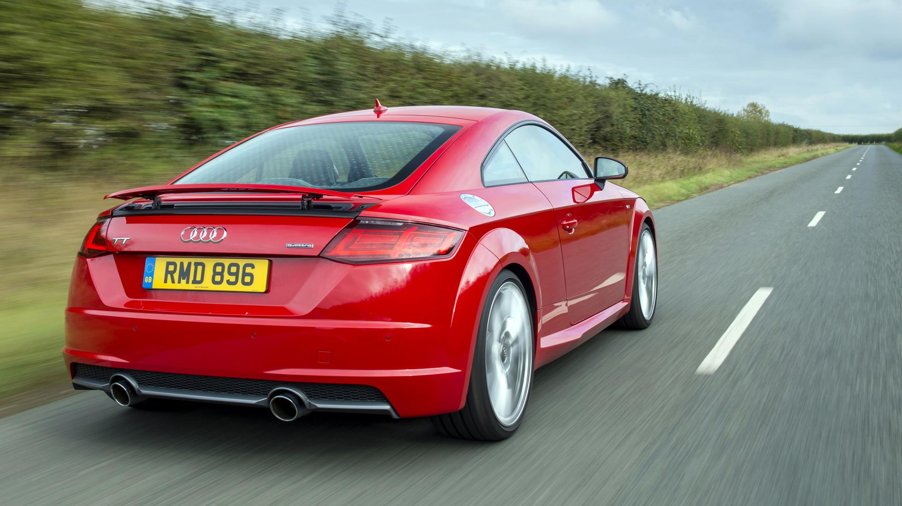
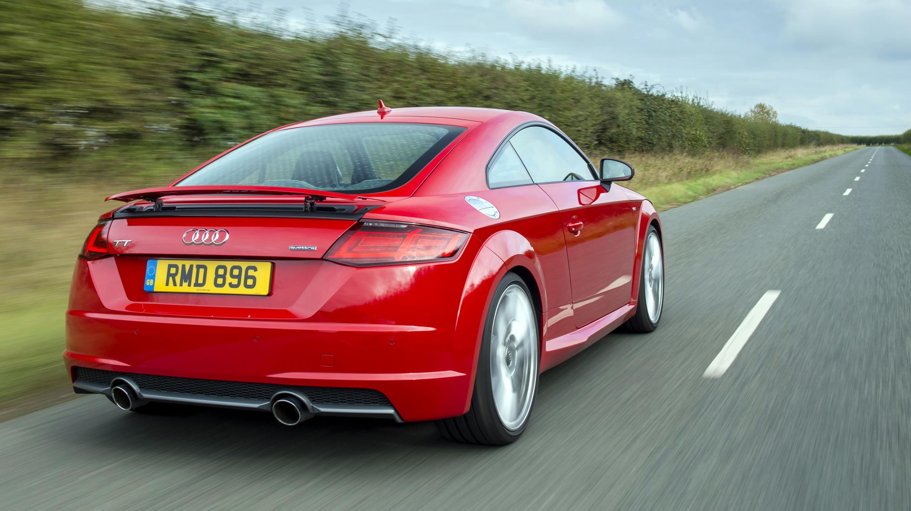
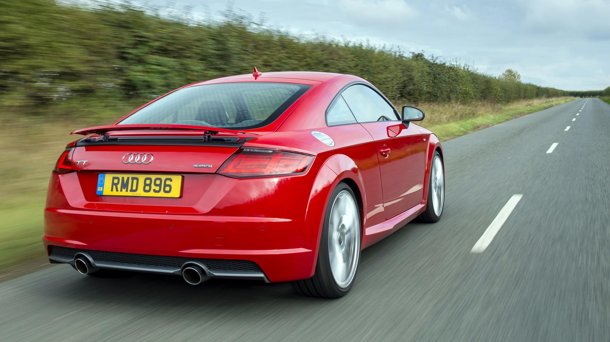

| MODELLO | Prezzo | l motore e disp. cilindri | CV | km/h | 0-100 | km/l | kg |
| 1.8 TFSI | 36.250 | 1798 L4 | 179 | 241 | 6,9 | 17,2 | 1210 |
| 2.0 TFSI | 42.250 | 1984 L4 | 230 | 250 | 6,0 | 16,9 | 1230 |
| 2.0 TFSI quattro S tronic | 47.250 | 1984 L4 | 230 | 250 | 5,3 | 15,6 | 1335 |
| TTS 2.0 TFSI quattro | 54.250 | 1984 L4 | 310 | 250 | 4,9 | 14,1 | 1365 |

L’Audi TT è la Coupé dal design particolare ed accattivante, con forme tondeggianti e linea aggressiva che contraddistinguono questo modello fin dall’inizio, nel 1998, quando apparve la prima serie, poi rinnovata nel 2006 con un restyling nelle motorizzazioni e nella dotazione tecnologica ma con un design molto simile all’originale. In fatto di allestimenti e tecnologia sulla seconda versione dell’Audi TT spiccano le sospensioni adattive denominate Audi Magnetic Ride e la differenziazione dei materiali utilizzati per il telaio: alluminio davanti ed acciaio dietro per un miglior bilanciamento del peso ed una maggiore sicurezza per il pedone in caso di urto. Disponibile sia in versione Coupé, venduta al prezzo di 32 mila euro, sia in versione Roadster (da 34 mila euro), l’Audi TT ha motori a benzina 1.8 e 2.0, la versione a 2 litri è disponibile anche con motore diesel da 170 cavalli.